Google Antigravity（本堂主工具）
本堂統一使用 Google Antigravity，依課程指定版本安裝獨立 App 或 IDE。Codex 是後續課程，本堂不要求安裝。第一次只開放練習資料夾。
FIELD LAB 01｜3 小時醫療救護實作
課前準備環境；課中依序選題、理解 Agent、用 Antigravity 寫規格與測試計畫、實作、驗證、安全檢查與發布。Codex 留到後續課程。今天做的是低風險教學原型，不是正式醫療系統。
選擇你的工作視角
開始前先把風險降到最低
依任務安裝，不是越多越好
本堂統一使用 Google Antigravity，依課程指定版本安裝獨立 App 或 IDE。Codex 是後續課程，本堂不要求安裝。第一次只開放練習資料夾。
讓 Agent 能執行資料整理、CSV、簡易網頁伺服器與自動化腳本。
Python 官方下載 ↗python --versionpy --versionpython3 --version
Git 用於保存版本與推送；GitHub Desktop 是圖形介面選配。Agent 要用終端機 Git 時，仍須驗證 git 命令。
git --version
閱讀 Agent 建立的 HTML、CSS、JavaScript、Markdown 與錯誤訊息。
VS Code 官方下載 ↗只有使用 npm、React、JavaScript 建置工具或特定 MCP 時才需要。
Node.js 官方下載 ↗node --version
建立版本庫與免費 github.io 網站。請開啟兩步驟驗證。
延伸工具為選配：Docker Desktop／Compose 安裝與驗證；Firecrawl 可先用瀏覽器 Playground 練習。請先完成本課程的核心環境。
依官方安裝程式指示安裝；若畫面提供「Add python.exe to PATH」，請勾選。完成後關閉並重新開啟命令提示字元，再輸入 python --version 或 py --version。macOS 常使用 python3 --version。
每組只選一條核心流程
把重複紀錄做成可驗證流程，但不讓 AI 自動下臨床決定。
重視手機操作、離線備援、時間壓力與現場錯誤容忍。
先自行形成判斷，再用 AI 比較、查證與校準信任。
控制訓練節奏、標準動作、故障注入與教官覆寫。
把學習目標、形成性評量與改善資料一起設計。
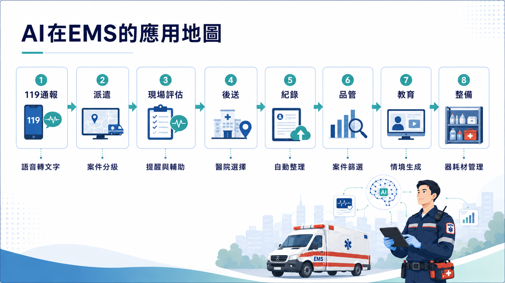
題庫來源整理可接續 Firecrawl 單頁擷取與人工覆核練習；需要讓各組使用一致的網站環境，可接續 Docker Compose 本機操作。
可以協助找候選來源，但採「官方網域白名單 → 先列清單 → 人工確認 → 才下載 → 保留來源與雜湊」流程。不得繞過登入、驗證或下載商業題庫；授權未確認前不公開。
必須標示「教學模擬，非真實裝置或即時醫療指示」，流程由合格講師依現行指引核准。
接 LINE、帳號或正式資料庫前，先畫資料流與人工停止點。
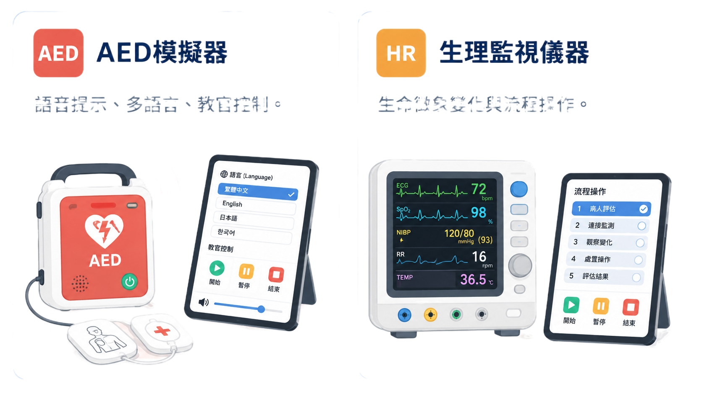
先分清誰提供能力、誰執行、誰管理
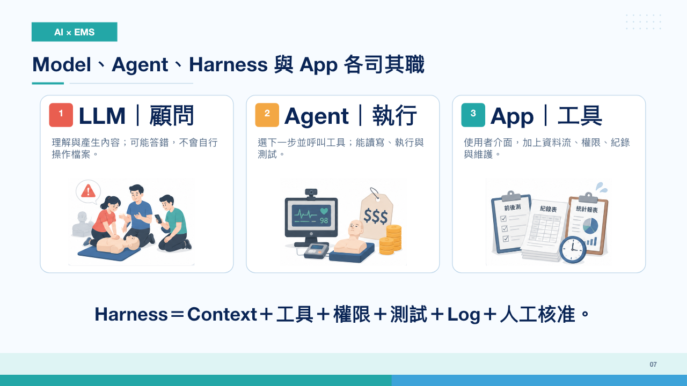
提供語言、推理與產生內容的能力，像大腦；可能答錯，本身不等於會操作檔案。
根據目標選下一步並呼叫工具，像執行勤務的人。
管理 Context、工具、權限、測試、Log、停止與回復，像勤務規範與督導系統。
最後給使用者操作的介面，還包含資料流、帳號、紀錄與維護。
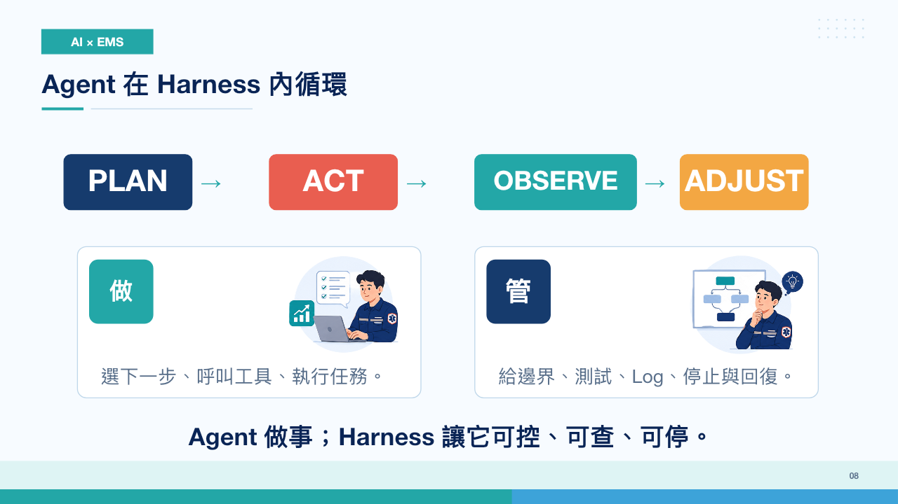
遇到陌生詞先查這裡
Docker 管理容器執行環境。Image 是程式與依賴的打包範本，Container 是執行中的環境。Dockerfile 描述建置步驟。看訓練箱比喻與名詞對照。
用 compose.yaml 定義服務、網路與儲存，再用 docker compose 指令啟停。Docker Desktop 已包含 Compose。動手啟動本機網站。
搜尋或擷取公開網頁，整理成 Markdown 等資料供人與 AI 使用。內容完整性、授權與官方答案需人工核對。看單頁擷取練習。
理解與產生文字、程式或多媒體內容的模型。提供能力，不等於完整工作流程。
在目標下規劃步驟、使用工具、觀察結果並持續修正的系統角色。
包圍 Agent 的執行與控制層，負責 Context、工具、權限、記憶、測試、Log、停止、回復與完成判定。
Agent 目前看得到的需求、檔案、對話、規則與工具結果。重要決定應寫入 Markdown，不只留在長對話裡。
模型處理文字的計量單位。重複貼大量資料會增加成本並稀釋重點。
交給模型的任務說明。好 Prompt 應寫清楚使用者、輸入、輸出、限制與完成條件。
人與 Agent 都容易閱讀的純文字格式，適合保存 SPEC、README、安全規則與交接紀錄。
Git 保存版本；Repository 是專案版本庫；Commit 是一次可追蹤、可回復的變更紀錄。
提出「請檢查這些變更，再決定要不要合併」的協作請求。個人網站發布不一定需要 PR；多人協作時可讓同伴先審查。
讓兩套系統以明確格式交換資料的介面。串接前要確認驗證、權限、錯誤處理與費用。
查詢與更新關聯式資料庫的語言。耗材管理先想清楚品項、數量、異動與權限；真正連資料庫時再學 SELECT、條件查詢與安全更新。
讓 AI 應用以一致方式連接工具與資料來源的協定；安裝前仍要審查可讀寫範圍。
先從核准資料找依據，再交給模型整理回答；來源品質與引用仍需人工確認。
保存結構化資料與異動紀錄。課堂原型先用 CSV 或試算表，正式使用才評估帳號、權限、備份與稽核。
記錄輸入、操作時間、結果與錯誤，讓問題可以重現、追查和改善。
限制程式或 Agent 能接觸的檔案、命令與網路範圍，降低錯誤的影響半徑。
在人機流程中預先設計必須由人檢查或批准的節點，不是出事後才補簽名。
先建立安全工作桌，再開始對話
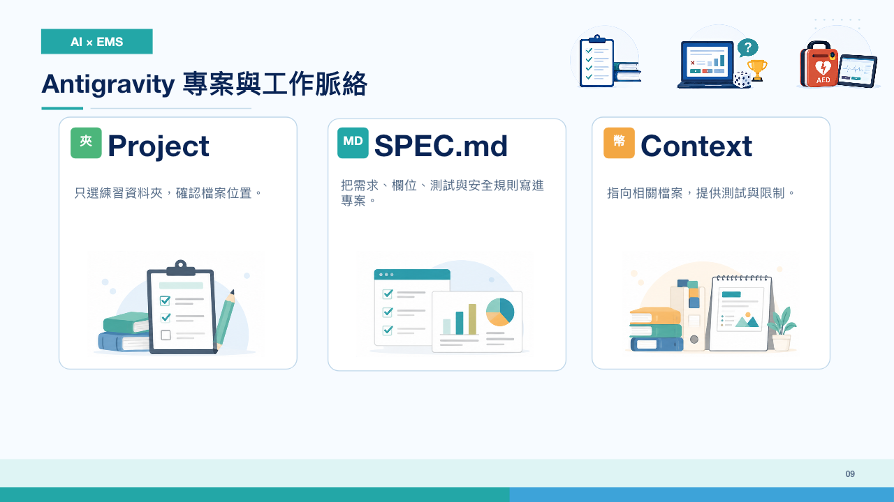
ems-ai-lab/
├── SPEC.md
├── README.md
├── SECURITY.md
├── data/
│ └── sample.csv
├── output/
└── tests/原始資料放 data，產出放 output。不要讓 Agent 直接覆蓋唯一一份原始檔。
# 專案名稱
## 使用者與情境
- 誰使用：
- 何時使用：
## 輸入／輸出
- 輸入：
- 輸出：
## 核心流程
1.
2.
3.
## 本次不做
- 不使用真實資料
- 不自動公開發布
## 完成條件與測試
- 正常案例：
- 錯誤案例：先規劃，再允許修改
只開放目前專案資料夾，先要求讀取 SPEC.md。
先列檔案、工具、風險與測試，不要立即修改。
一次建立最小版本，完成後先測試。
檢查畫面、Log、測試結果與修改檔案。
以虛構資料做一條核心流程；每一步都能停下來核對。
請先閱讀 SPEC.md，不要立即修改。
先回覆：
1. 你理解的唯一核心流程。
2. 預計建立或修改的檔案。
3. 需要的工具與權限。
4. 兩個測試案例。
5. 目前看見的風險。
限制：只使用本專案中的虛構資料；輸出放在 output；
不改 data 原始檔；不下載、不登入、不外傳、不刪除、不發布，
除非我另行確認。測試不是展示成功，而是刻意製造失敗
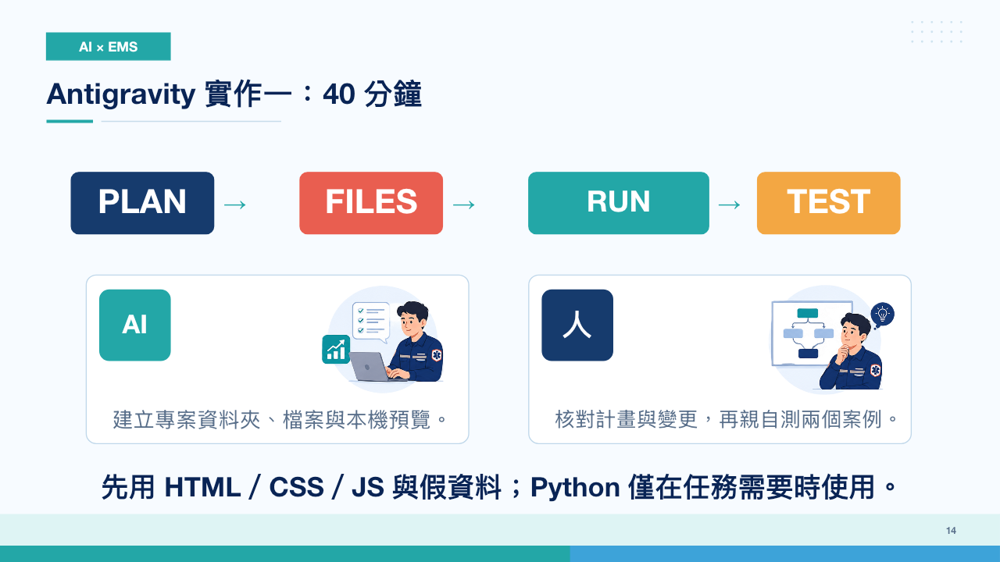
一筆完整、格式正確的資料，能走完核心流程。
空白、負數、錯誤格式、重複資料或不存在的檔案。
增加功能後，原本成功的兩個案例仍然成功。
知道上一個穩定版本在哪裡，必要時能撤回。
請先停止新增功能。
根據以下資訊診斷，不要一次修改多個假設：
- 位置：哪一頁／哪個功能
- 重現步驟：
- 預期結果：
- 實際結果：
- 完整錯誤訊息／Log：
先說明最可能原因、要檢查的檔案與最小修正方式；
修正後重跑原本成功的測試與這次失敗案例。能做不代表能公開
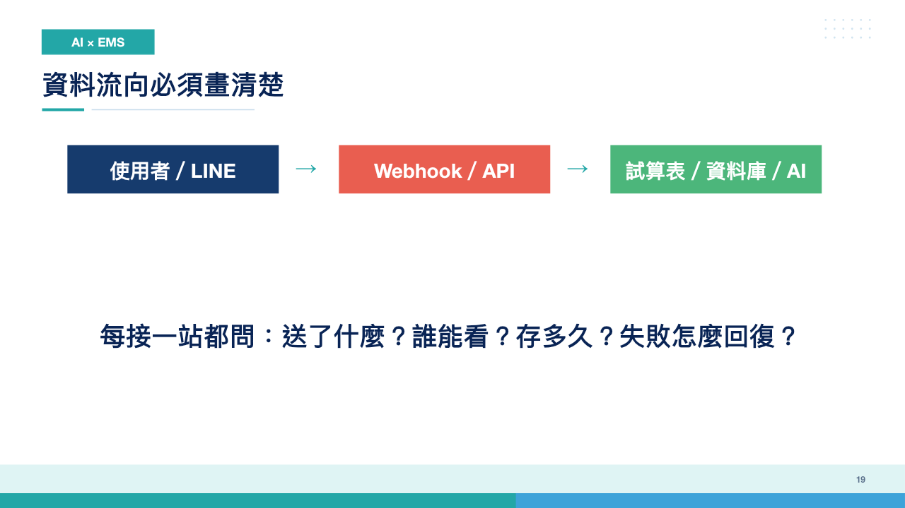
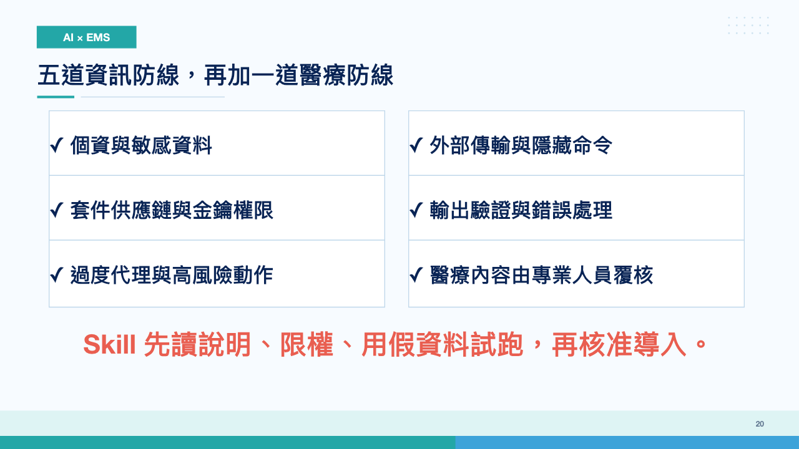
只在自己的瀏覽器練習，可先用靜態網頁與假資料；多人同步、登入或 LINE 通知才需要另外設計服務。
先發布沒有敏感資料的靜態網站
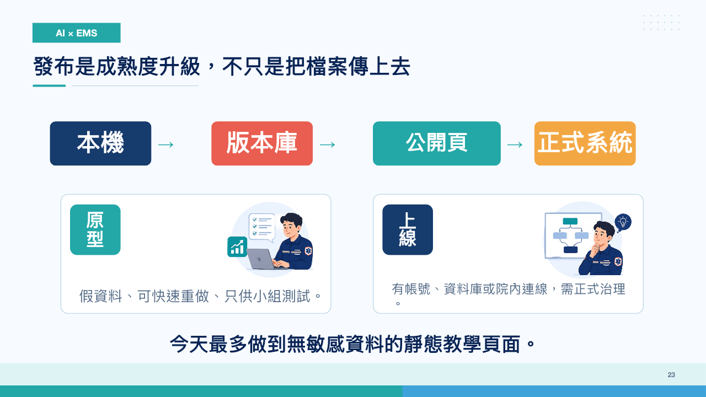
先確認檔案與秘密資料，再選擇上傳方式；首次上課可直接用 GitHub 網頁上傳。
git status 看改了什麼。.env；再逐項加入。若作品加入 Docker 或資料庫，先看 容器系統與靜態網站代管的差別。compose.yaml 不能直接放到 GitHub Pages 執行。
index.html。netlify.app 網址，用手機測試。main 與根目錄。username.github.io/repository 網址。project.pages.dev。project.vercel.app。請先做公開發布檢查，不要直接上傳。
1. 列出準備公開的所有檔案。
2. 搜尋姓名、病歷號、Email、電話、院內網址、絕對路徑。
3. 搜尋 API Key、Token、密碼、.env 與秘密設定。
4. 確認根目錄有 index.html，所有連結與圖片使用相對路徑。
5. 在本機啟動並測試手機寬度、重新整理與錯誤頁面。
6. 更新 README：用途、限制、資料來源、授權與回復方式。
完成後只回報檢查結果與預計上傳清單，等待我人工確認。不要只問喜不喜歡
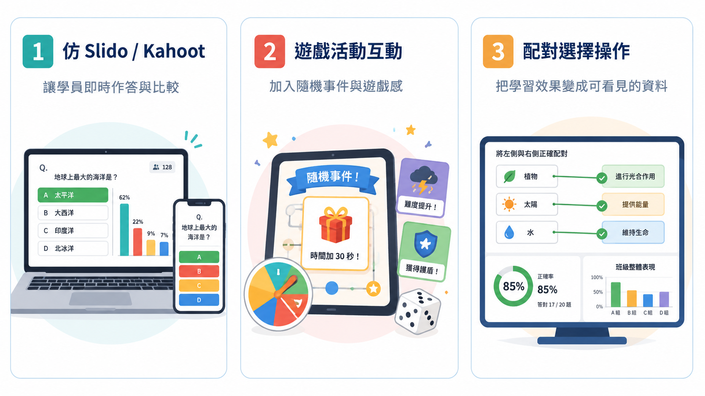
15 人的小班資料適合形成性改善，不宜宣稱一般化成效。收集前先說明目的、保存期限與誰能看到；個人表現不要公開排名。
延伸學習
想把同一版訓練網站交給各組，或把核准網頁整理成題庫草稿？先分清執行環境、服務配置與資料取得這三件事。
像一套規格一致的訓練箱。Image 是打包範本，Container 是正在執行的環境。
認識 Docker 名詞用一份 compose.yaml 管理網站、API 與資料庫；入門先練習一個網站的啟動、Log 與停止。
安裝與本機操作先找候選頁，取得允許使用的單頁內容，再核對來源、日期、缺漏與答案。
題庫來源整理練習Docker 不會自動提供公開網址；Firecrawl 雲端服務不需要先安裝 Docker。初學者可先看示範，原本的靜態網站練習仍可獨立完成。
先建立人的能力，再讓 AI 協作
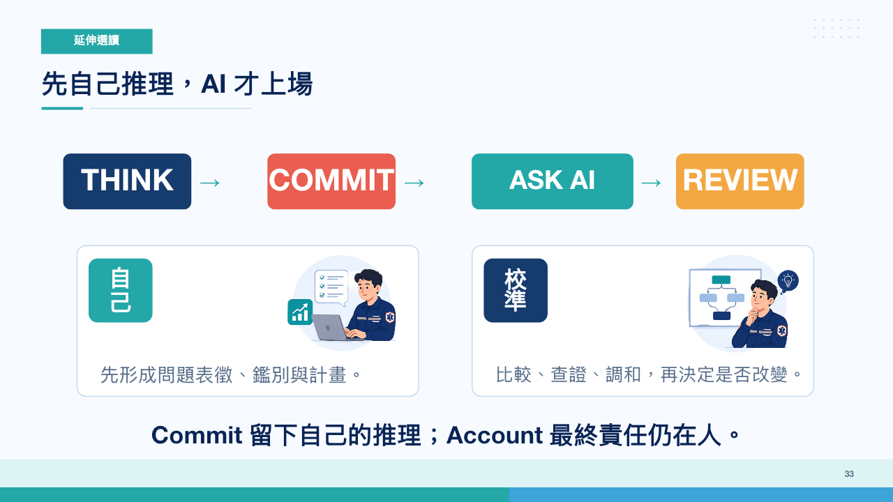
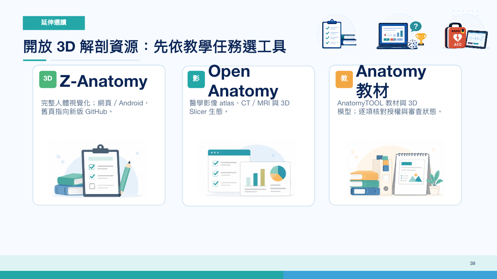
卡住時先縮小問題
不一定。主課程先做 HTML／CSS／JavaScript 靜態網站；Python 只在使用腳本或本機伺服器時需要。Git 可用網頁上傳暫代；VS Code 是閱讀程式的選項。Node.js 只有使用 npm、現代前端框架或特定工具時才需要。若安裝遇到問題，先使用同組電腦或免安裝方案。
可以。學習目標是把需求寫清楚、讓 Agent 先規劃、看懂測試結果並控制風險，不是背語法。
先確認檔案位於目前專案資料夾、名稱與路徑正確，而且平台已取得該資料夾權限。不要因為讀不到就開放整台電腦。
不建議把課堂原型直接當正式系統。前端不得放秘密金鑰；Webhook、帳號、資料庫與病人資料需要後端、驗證、權限、Log、備份與正式資安治理。
先得到平台免費子網域；若要自己的 .com 或 .tw，通常需要向網域註冊商購買，再依平台文件設定 DNS。
介面、免費額度與方案條款可能調整；請以官方頁面為準。
完成一輪，不等於正式上線
能做、值得做、可以正式使用，是三個不同的判斷。若下一步要接真實資料、LINE、資料庫或正式網域，請停止自行擴充，改啟動機構治理。